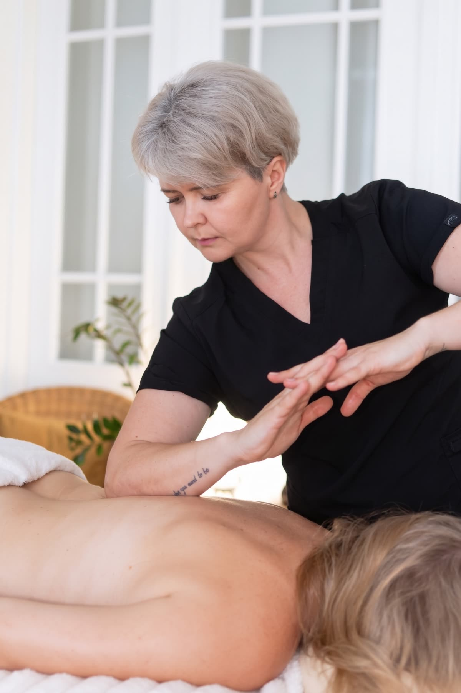
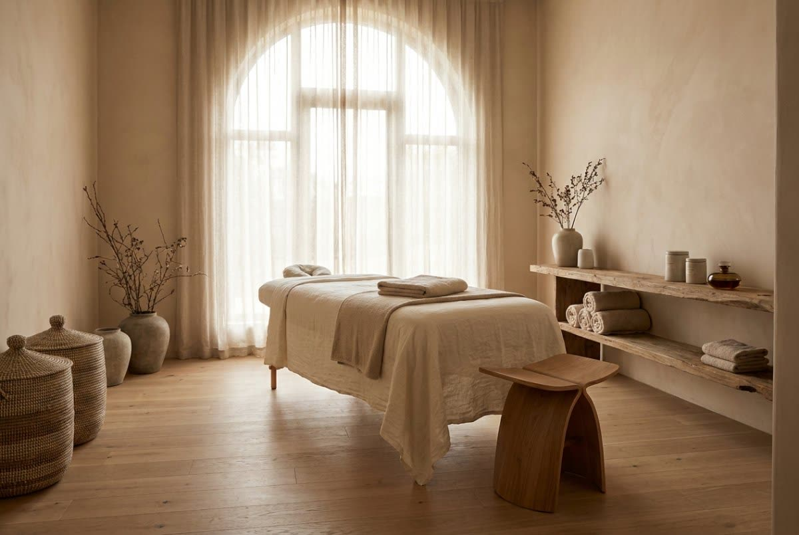

Massage4you RezerwacjaMasaże ciała · Poznań
Spokojny, głęboko odprężający rytuał z naturalnymi olejkami, który wycisza ciało i umysł. Najczęściej wybierany zabieg w naszym studiu — dla ciała pracującego i odpoczywającego.

Na czym polega
Masaż relaksacyjny to płynne, rytmiczne techniki prowadzone wzdłuż przebiegu mięśni — głaskanie, rozcieranie i spokojne ugniatanie. Terapeutka pracuje równym tempem, stopniowo pogłębiając nacisk tam, gdzie ciało jest najbardziej spięte, ale nigdy nie wychodzi poza granicę komfortu.
Pracujemy na naturalnych, hipoalergicznych olejkach. Zakres masażu ustalamy przed zabiegiem — obejmuje całe ciało, a przy dłuższych wariantach zostaje czas, by spokojnie popracować nad plecami, karkiem i barkami.

Korzyści
Rozluźnia spięcia karku, barków i pleców po pracy przy biurku oraz po wysiłku.
Pobudza przepływ krwi i limfy, dotlenia tkanki i dodaje energii na kolejne dni.
Obniża poziom napięcia nerwowego, wycisza układ nerwowy i poprawia jakość snu.
Wspiera powrót do formy po treningu i po codziennym przeciążeniu organizmu.
Jak przebiega zabieg
Poznajemy Twoje potrzeby, dolegliwości i oczekiwania wobec wizyty.
Dobieramy naturalny olejek i technikę do kondycji Twojego ciała.
Pracujemy nad całym ciałem, dostosowując nacisk i tempo na bieżąco.
Chwila odpoczynku i wskazówki, jak przedłużyć efekt zabiegu.
Czas trwania i cena
Nie wiesz, ile czasu wybrać? Podczas rezerwacji doradzimy wariant najlepszy dla Twojego ciała i planu dnia.
Przeciwwskazania
W razie wątpliwości skonsultuj wizytę z terapeutą — dobierzemy bezpieczny wariant zabiegu.
FAQ
Dla utrzymania efektu polecamy wizytę co 2–3 tygodnie, a przy nasilonych napięciach — raz w tygodniu przez pierwszy miesiąc.
Relaksacyjny prowadzimy spokojnym, równym rytmem i pracujemy nad całym ciałem. Zdrowotny jest bardziej ukierunkowany — skupia się na konkretnym problemie, napięciu czy bólu, i kosztuje 20–40 zł więcej przy tym samym czasie.
Nie. Nacisk dobieramy indywidualnie — masaż powinien być odczuwalny, ale komfortowy. Zawsze reagujemy na Twoje sygnały.
Nic specjalnego — zapewniamy ręczniki i olejki. Wystarczy przyjść kilka minut wcześniej, by spokojnie się przygotować.
Tak, po konsultacji. W ciąży stosujemy delikatniejsze techniki i odpowiednie ułożenie ciała.
Rezerwacja online
Wybierz dogodny termin online — potwierdzenie otrzymasz od razu.